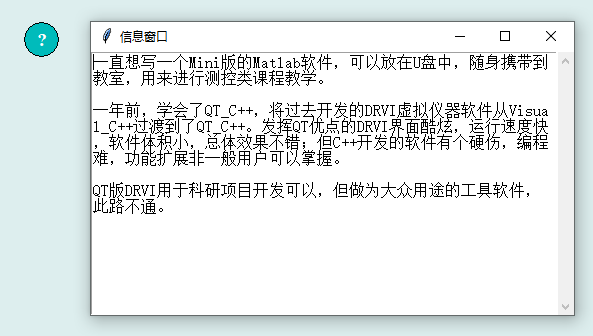

帮助信息控件在界面上显示一个信息图标，点击则显示一段用户定义的文字信息，如程序操作说明等，其图形显示效果如下：

在Python程序GUI界面中创建一个帮助信息控件的命令为:
hl=dr.DRInfo(win,x,y,w,h,cb,cb1,cf,text)
其中hl是创建时用户设定的变量名。帮助信息控件有一个属性函数，可用于设定显示的文字信息。
hl.setValueString(txt)
.